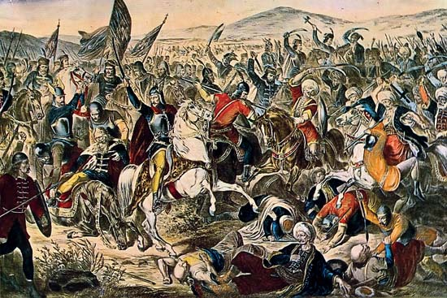

History
 The ancient Illyrians are known as the Albanian predecessors and the initial inhabitants on the Balkan Peninsula which were followed by the Slavs in the 6th and 7th centuries. The country of Kosovo was ruled by Bulgaria from the 9th century up until the Serbs took control in the 12th century. In 1389, the Ottoman Empire Turks defeated the Serbs and absorbed Kosovo. Following the Ottoman Turks defeat, the Ottoman Empire ruled centuries until year 1913 which was when Serbia regained control over Kosovo as it became part of the Yugoslavia Federation. On February 17, 2008, Kosovo gained its independence from Serbia after another bloody war around the end of the 20th century.Recent History
2003 – The first direct talks took place among Kosovar and Serbian leaders in October 2003, since the conflict of 1999.
2003 – Yugoslavia turned into Serbia-Montenegro in December 2003. The UN set out the conditions for the final status talks for Kosovo in 2005 which were given the name of “standards before status” by the condition of Kosovo making “sufficient progress” by meeting some international standards in relation to its laws, freedom of movement, democratic institutions and human rights.
2004 – The worst conflict took place between the Kosovars and Serbs in March 14-19 years after the clash of 1999. Aggression initiated by a drive-by shooting resulting in a Serb teenager’s death followed by three Albanian teenagers’ drowning in the Ibar River. It was argued and believed that these occurrences were used to arrange violence by the Serb extremist groups.
2005 – Talks for the final status of Kosovo were sponsored by the UN and chaired by the former President of Finland, Martti Ahtisaari.
2008 – Kosovo’s independence was declared by Kosovo’s Parliament on February 17, 2008; Kosovo – the Republic of Kosovo with partial recognition of the declaration. Kosovo is currently the second youngest country in the world and the youngest country in Europe.
2008 – Parliament adopts new constitution.
2010 – The International Court of Justice rules that Kosovo’s declaration of independence from Serbia in 2008 was not illegal under international law, in response to a complaint from Serbia that it had violated its territorial integrity.
Throughout the 1990’s, armed unrest and ethnic tension rose as a result of the escalated nationalism among the division of Yugoslavia and the suspension of the Kosovo Assembly by Serbia. Ibrahim Rugova was elected as president of the republic that was self-proclaimed by the ethnic Albanians of Kosovo in disobedience with the Serbian authorities
1998 – Open clash and conflict took place between the Serbian Police and the Kosovo Liberation Army (KLA) a group which was established to fight the Serbian regime – requiring and demanding Kosovo to separate from the Federal Republic of Yugoslavia and gain its freedom.
1998 – September – An ultimatum to bring an end to the attacks on Kosovo Albanians was given by the North Atlantic Treaty Organization (NATO) to Milosevic.
1999 – NATO bombing of the Federal Republic of Yugoslavia took place between the period of March 24 and June 10, 1999, for the duration of which NATO attacked Serbia and Albanian paramilitaries the aggression with the Yugoslav forces. At that time an enormous displacement of approximately 1 million people of the Kosovar population took place.
1999 –Milosevic surrendered and accepted the peace conditions on June 3rd, 1999 where following this action, KFOR –a NATO force, started entering Kosovo. NATO’s mission was solely based on peacekeeping although it was preparing conflict conduct operation. An estimated of 12,000 victims were rooted by the war and 13,368 civilians were missing one year following the conflict.
Throughout the Balkan Wars in 1912, the majority of Kosovo was taken over by the Serbian Kingdom apart from the Dukagjini area which was taken over by the Montenegrin Kingdom.
As the Communist regime of Tito was established, Kosovo was identified and stated as an autonomous region of the country of Serbia in year 1946 and later in 1963 became an autonomous province.
Many patriots were killed end imprisoned by the Communist government and such acts were culminated by the massacre of Tivar in which around 3000-4000 Kosovars were executed by machine-guns. As the Yugoslavia constitution was passed in 1974, Kosovo was virtually self-governed. As a result, all through the 1980’s, tensions among the Serbs and Albanians in the Kosovo area arose. The autonomy of Kosovo was then severely condensed by the Serbia-wide referendum in 1989.
The Ottoman Turks formed the Vilayet of Kosovo to be one of the Ottoman territories in addition to the bringing of Islam into the area. At the time the Ottoman Turks had absolute power in Kosovo and they ruled the region for approximately 500 years where numerous Slav acknowledged Islam and served under the rules of the Ottoman Turks.
One of the four vilayets with Albanians in 1878 formed the League of Prizren and was known as the Vilayet of Kosovo with the purpose of resisting the Ottoman rules and other invasions by newly-emerging nations in the Balkans. Coincidentally though, Prizren is today one of the most Turk-related and influenced cities of Kosovo.
The Kosovo area was located in the eastern side of Illyria bordering on Thrace in century 4 BC. At that point in time, Kosovo was inhabited by the Thraco-Illyrian tribes of Dardania. In the distant ancient past, Dardania was the name of Kosovo’s region and was formed as a part of the Roman province of Moesia. The Balkans area was captivated within the Byzantine Empire in the 850’s after 6th and 7th century migrations took place in the area. The control of the Byzantine was then reasserted by Emperor Basil II who was known to be very forceful and powerful. Kosovo remained in the Serbian Empire from 1346 to 1371 as it was immersed into Serbia towards the end of the 12th century. The Serbian Prince army was defeated by the Ottoman Turks in the well-known Battle of Kosovo in 1389; the Ottoman Turks finally took control over the territory of Kosovo in the year of 1455.
To know more about the early history click in the button below: